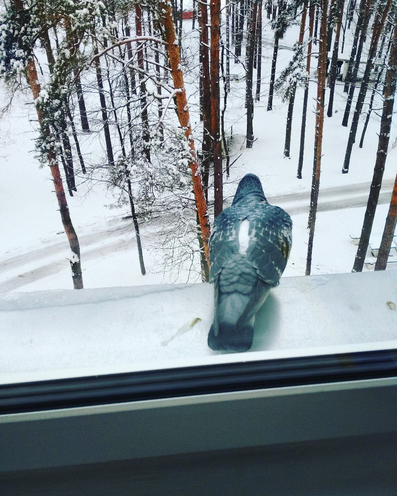

Сижу за решётка в темнице сырой...)
Или мои предложения по улучшению работы роддома.

Начнем с приятного. С тех пор, как я была здесь последний раз появились нововведения, которых не было раньше. Например, в палате для рожениц , появились фитболы. Они сразу завоевали сердца посетительниц. И не только сердца)
Я бы предложила ещё механическую беговую дорожку поставить. Она автономная, есть не просит, а ходить в первый период родов очень даже здорово. А то я не знаю сколько километров находила между кроватями🙂
Идём дальше. Все случилось, человек родился, едем в послеродовое.
Во тут все самое интересное и начинается. Это место, где спать вам не удастся: днем - потому, что все время надо куда-то идти или маме или ребёнку, или обоим, но в разные места, ночью - потому, что ребенок с вами и его режим непредсказуем.
Не удивительно, что все такие понурые. Нервное истощение - ноу проблем, за пять и более дней на фоне недосыпа - легко.
Из приятного-появилась услуга платной палаты. Это райское место, чувствовала себя как в санатории - душ, туалет, холодильник, чайник, пеленальный столик, отдельная комната для мамы с малышом. Беда в том, что таких палат только одна. Я в неё чудом попала. Спрос на неё сильно превышает предложения.
По моим предложениям-я бы добавила комнату лфк и психолога.
Ура физкультура! С первых часов при нормальных родах уже можно делать лёгкие упражнения в положении лёжа. А это ведь только на пользу мамам-быстрее восстанавливаемся, в кровь чуть эндорфинов, стабилизируем психо-эмоциональное состояние, повышаем лактацию.
Про психолога - тут функция переложилась на весь персонал, который как и все иногда бывает не в духе. Человеческий фактор - никуда не денешься. Но вы можете себе помочь, шутите, улыбайтесь - и весь медперсонал будет вам помогать с огромной радостью. Все в ваших руках.
В целом жить и рожать можно. Будьте позитивны, готовьтесь заранее - физически и психологически. В этом могу помочь, кстати. Веду занятия для беременных в Гомеле. Обращайтесь.
Легких родов, тем кто собрался. Удачи!
Текст и фото Юля Воробьева.